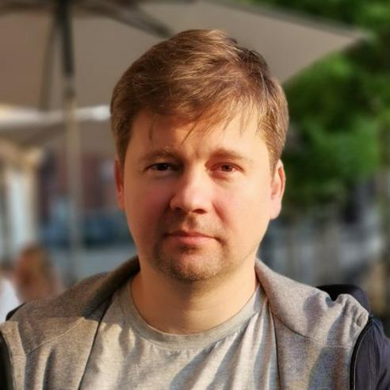

<!-- meta http-equiv="refresh" content="0; url=../index.html" / -->
<link rel="stylesheet" href="../styles/index.css" media="all" />
<section id="main-logo_data">
  <header id="main-logo_header" class="text-shadow">
    Design the road to your cherished dream
  </header>
  <details id="main-logo_details">
    <summary class="text-shadow">Members</summary>
    <details class="person">
      <summary class="shadow">
        
        <footer>Viachaslau<br /><small>Lyskouski&nbsp;&nbsp;&nbsp;&nbsp;&nbsp;</small></footer>
      </summary>
      <header>
        <strong class="text-shadow">Viachaslau Lyskouski</strong>: 
        <em>Founder</em>
      </header>
      
      <div>
        My goal is to become a true architect, who can design and implement innovative solutions for complex problems. 
        I have the skills and experience to achieve this, as I have been a full-stack engineer for over 20 years in 
        various domains. I enjoy writing code, learning new technologies, and delivering high-quality products.
        <menu>
          <span>PHP</span>
          <span>JavaScript</span>
          <span>C#</span>
          <span>Python</span>
          <span>Erlang</span>
          <span>Dart</span>
        </menu>
      </div>
    </details>
  </details>
</section>